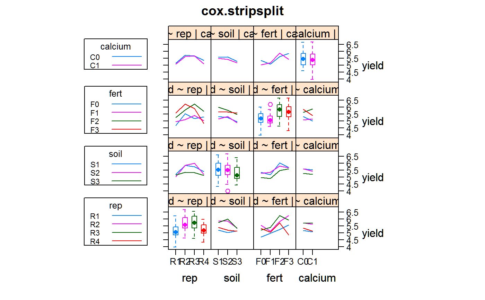

cox.stripsplit.RdStrip-split-plot of barley with fertilizer, calcium, and soil factors.
A data frame with 96 observations on the following 5 variables.
repreplicate, 4 levels
soilsoil, 3 levels
fertfertilizer, 4 levels
calciumcalcium, 2 levels
yieldyield of winter barley
Four different fertilizer treatments are laid out in vertical strips, which are then split into subplots with different levels of calcium. Soil type is stripped across the split-plot experiment, and the entire experiment is then replicated three times.
Sometimes called a split-block design.
Comes from the notes of Gertrude Cox and A. Rotti.
SAS/STAT(R) 9.2 User's Guide, Second Edition. Example 23.5 Strip-Split Plot. http://support.sas.com/documentation/cdl/en/statug/63033/HTML/default/viewer.htm#statug_anova_sect030.htm
# \dontrun{ library(agridat) data(cox.stripsplit) dat <- cox.stripsplit # Raw means # aggregate(yield ~ calcium, data=dat, mean) # aggregate(yield ~ soil, data=dat, mean) # aggregate(yield ~ calcium, data=dat, mean) libs(HH)#>#>#>#> #>#> #> #>#>#> #>#> #> #>#>#> #>#> #> #>#> #>#> #> #>interaction2wt(yield ~ rep + soil + fert + calcium, dat, x.between=0, y.between=0, main="cox.stripsplit")# Traditional AOV m1 <- aov(yield~ fert*calcium*soil + Error(rep/(fert+soil+calcium:fert+soil:fert)), data=dat) summary(m1)#> #> Error: rep #> Df Sum Sq Mean Sq F value Pr(>F) #> Residuals 3 6.28 2.093 #> #> Error: rep:fert #> Df Sum Sq Mean Sq F value Pr(>F) #> fert 3 7.221 2.4071 3.562 0.0604 . #> Residuals 9 6.082 0.6758 #> --- #> Signif. codes: 0 '***' 0.001 '**' 0.01 '*' 0.05 '.' 0.1 ' ' 1 #> #> Error: rep:soil #> Df Sum Sq Mean Sq F value Pr(>F) #> soil 2 1.927 0.9633 3.466 0.0999 . #> Residuals 6 1.668 0.2779 #> --- #> Signif. codes: 0 '***' 0.001 '**' 0.01 '*' 0.05 '.' 0.1 ' ' 1 #> #> Error: rep:fert:calcium #> Df Sum Sq Mean Sq F value Pr(>F) #> calcium 1 0.2773 0.2773 1.883 0.1950 #> fert:calcium 3 1.9640 0.6547 4.446 0.0255 * #> Residuals 12 1.7671 0.1473 #> --- #> Signif. codes: 0 '***' 0.001 '**' 0.01 '*' 0.05 '.' 0.1 ' ' 1 #> #> Error: rep:fert:soil #> Df Sum Sq Mean Sq F value Pr(>F) #> fert:soil 6 0.6883 0.11471 1.301 0.306 #> Residuals 18 1.5870 0.08817 #> #> Error: Within #> Df Sum Sq Mean Sq F value Pr(>F) #> calcium:soil 2 0.0449 0.02247 0.245 0.784 #> fert:calcium:soil 6 0.1894 0.03156 0.345 0.906 #> Residuals 24 2.1962 0.09151# With balanced data, the following are all basically identical libs(lme4) # The 'rep:soil:fert' term causes problems...so we drop it. m2 <- lmer(yield ~ fert*soil*calcium + (1|rep) + (1|rep:fert) + (1|rep:soil) + (1|rep:fert:calcium), data=dat) if(0){ # afex uses Kenword-Rogers approach for denominator d.f. libs(afex) mixed(yield ~ fert*soil*calcium + (1|rep) + (1|rep:fert) + (1|rep:soil) + (1|rep:fert:calcium) + (1|rep:soil:fert), data=dat, control=lmerControl(check.nobs.vs.rankZ="ignore")) ## Effect stat ndf ddf F.scaling p.value ## 1 (Intercept) 1350.8113 1 3.0009 1 0.0000 ## 2 fert 3.5619 3 9.0000 1 0.0604 ## 3 soil 3.4659 2 6.0000 1 0.0999 ## 4 calcium 1.8835 1 12.0000 1 0.1950 ## 5 fert:soil 1.2735 6 18.0000 1 0.3179 ## 6 fert:calcium 4.4457 3 12.0000 1 0.0255 ## 7 soil:calcium 0.2494 2 24.0000 1 0.7813 ## 8 fert:soil:calcium 0.3504 6 24.0000 1 0.9027 } # }